전 세계 주요 선사 14곳, 배 195척(신조선 포함)의 톤수·1인당 톤수·승무원당 승객·리모델링 연도를 선사별로 정리한 선단 데이터베이스 (2026)
GT/승객 · 숫자가 클수록 승객 한 명이 쓰는 배 안 공간이 넓어요
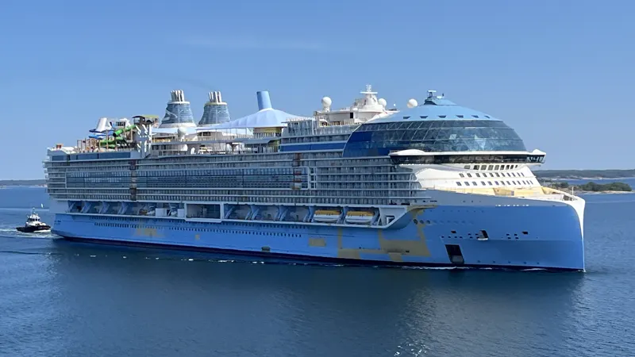
혁신/대형 Royal Caribbean아이콘 및 오아시스 클래스를 보유한 세계 최대 규모의 선사. 리모델링(Amplified) 정보 포함.
상세 데이터 보기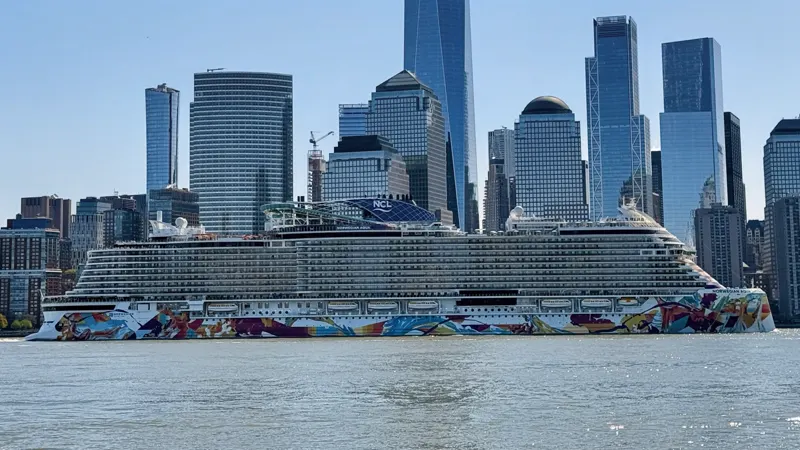
프리스타일 Norwegian Cruise Line자유로운 크루징과 프리마 클래스. Norwegian Edge 리뉴얼 데이터.
상세 데이터 보기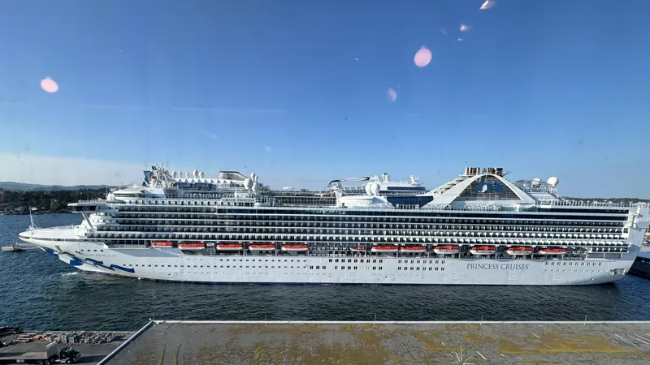
클래식/IT기술 Princess Cruises메달리온 클래스 기술력과 스피어 클래스 신조선 데이터 리포트.
상세 데이터 보기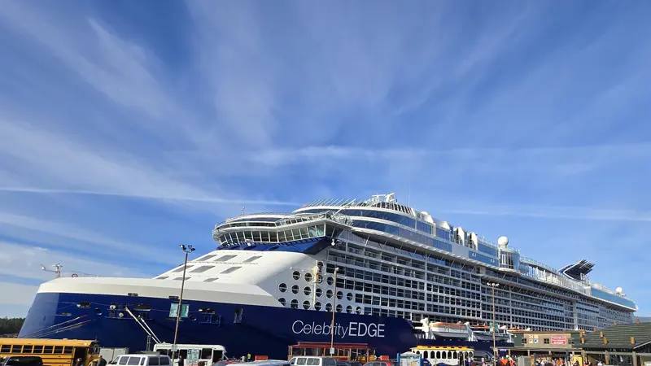
모던 럭셔리 Celebrity Cruises세련된 디자인의 엣지 클래스와 'Revolution' 리뉴얼 프로젝트 현황.
상세 데이터 보기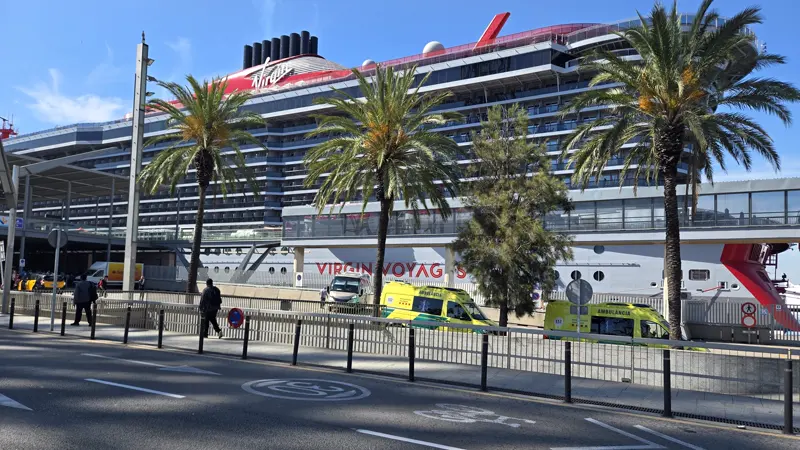
성인 전용 Virgin Voyages리처드 브랜슨의 혁신적인 선단. 레이디 쉽 클래스의 올 인클루시브 정보.
상세 데이터 보기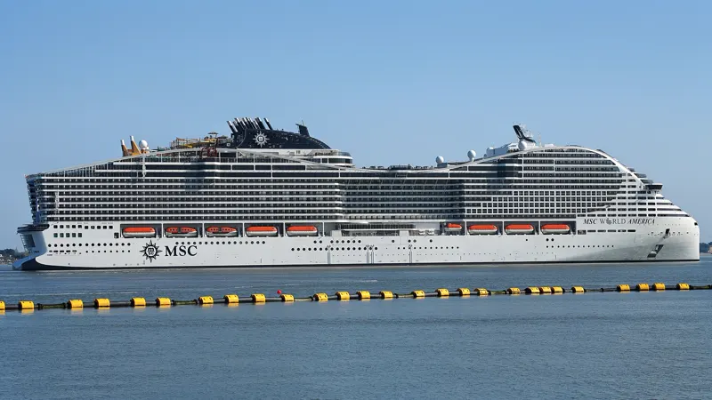
유럽/성장 MSC Cruises월드 클래스 중심의 급성장 선사. 르네상스 프로젝트 및 최신 선단 정보.
상세 데이터 보기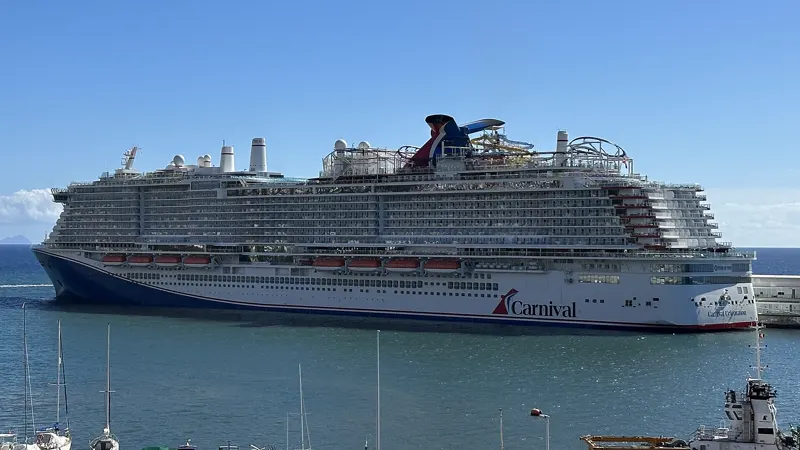
엔터테인먼트 Carnival Cruise Line'The Fun Ships'. 선샤인 클래스 전면 개조 및 엑셀 클래스 정보.
상세 데이터 보기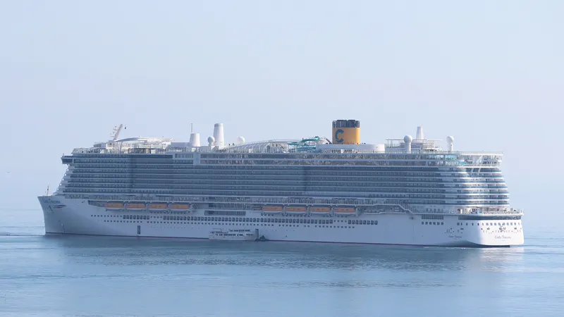
이탈리안 스타일 Costa Cruises이탈리아의 감성을 담은 선단. 높은 공간 효율성과 엑셀런스 클래스 정보.
상세 데이터 보기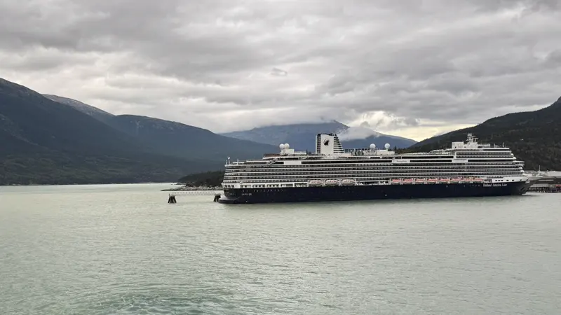
전통/클래식 Holland America Line150년 전통의 품격 있는 크루징. 중형 선박이 주는 안락함과 피나클 클래스의 최신 시설 정보.
상세 데이터 보기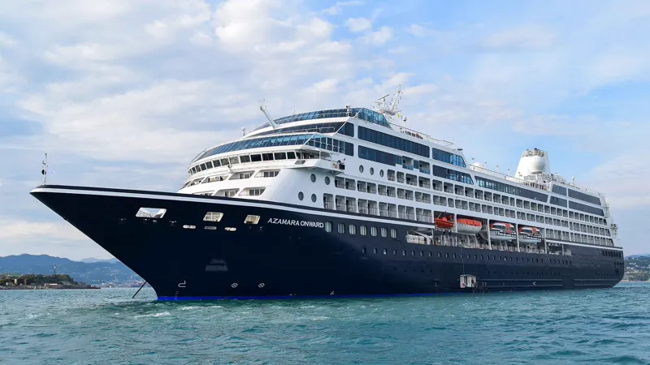
부티크/데스티네이션 Azamara소형 선박만의 세밀한 기항지 탐색과 프리미엄 서비스. R-클래스 전 선단 데이터.
상세 데이터 보기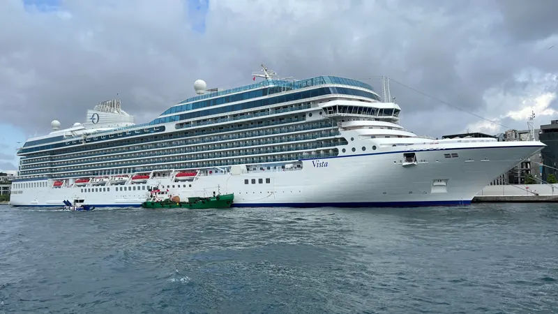
미식/어퍼프리미엄 Oceania Cruises바다 위 최고의 요리로 불리는 독보적 미식 선사. 우아한 인테리어와 압도적인 1인당 공간 비율 데이터.
상세 데이터 보기